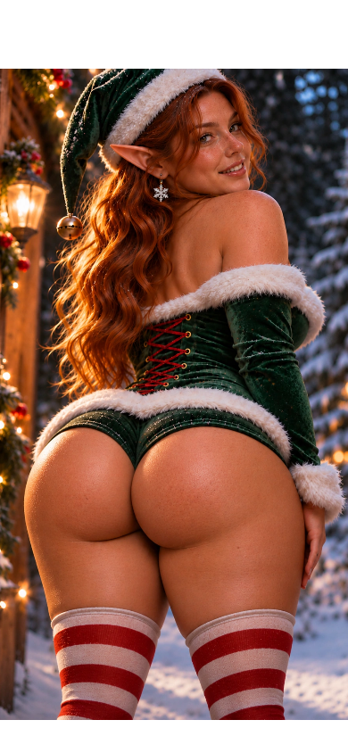
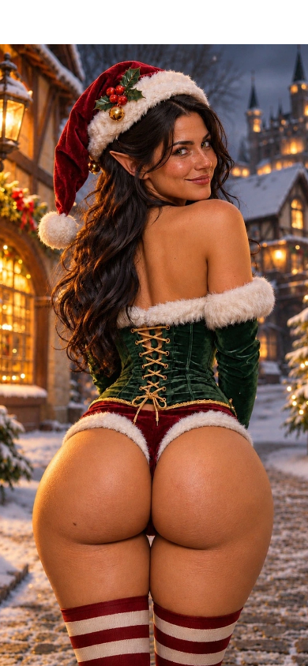
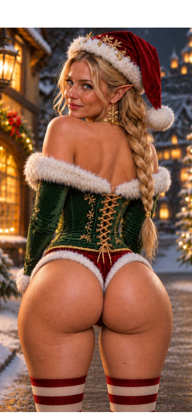
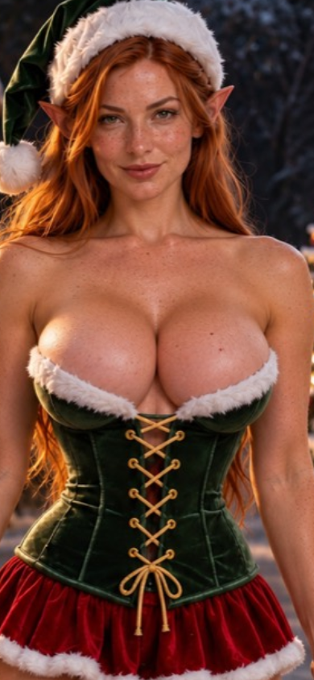
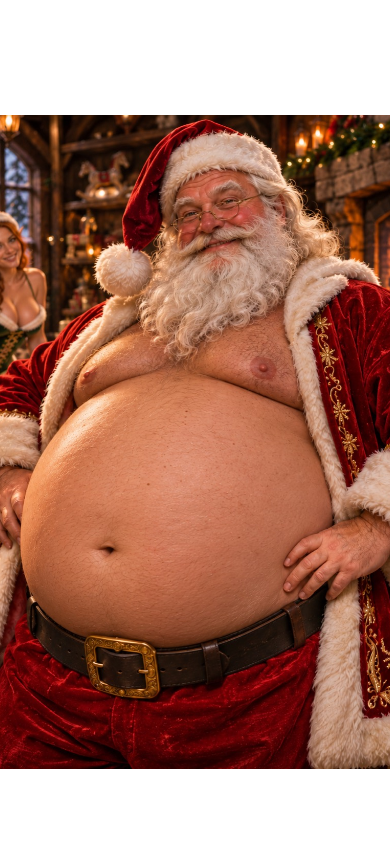

Left: R12 with optional inputs off. Right: R13.3, gentle synthetic shake early in the clip, then continuous Auto from 3 seconds. Same artwork and framing. Actual rendered frames; these are not recordings of a physical iPhone or a performance benchmark.
Open iPhone preview · Results and limitations




